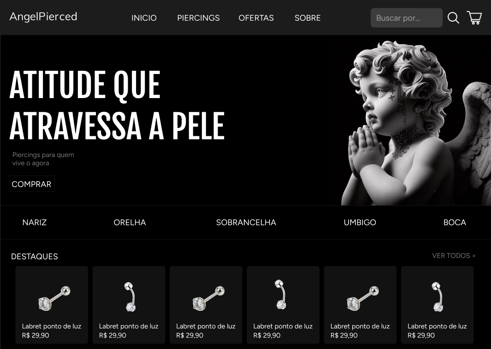

✦
Site de Piercing
Site de piercing que desenvolvi, com uma identidade visual moderna e foco na apresentação dos produtos.
Ver imagem do projeto →OLÁ, EU SOU
Sou muito interessado por tecnologia e estou sempre disposto a aprender mais. Gosto de explorar novas ideias, desenvolver habilidades e descobrir como a tecnologia pode transformar o dia a dia.
SOBRE MIM
Sou um estudante de ensino técnico com experiência em várias áreas. Tenho curiosidade, gosto de aprender na prática e procuro evoluir continuamente, tanto nos estudos quanto nos projetos que desenvolvo.
Busco constantemente novos conhecimentos para ser um profissional cada vez melhor.
MINHAS HABILIDADES
Word, PowerPoint, Excel e ferramentas de produtividade.
Curiosidade e adaptação a ferramentas e sistemas digitais.
Criação e edição de conteúdo visual.
Leitura e comunicação em desenvolvimento.
MEUS PROJETOS
Ideias que saem do papel e projetos que quero desenvolver no futuro.

Site de piercing que desenvolvi, com uma identidade visual moderna e foco na apresentação dos produtos.
Ver imagem do projeto →Um espaço reservado para novos projetos e experiências que ainda vou criar.
Futuros projetos ↗Mais um espaço para mostrar minhas próximas criações e o que vou aprender no caminho.
Futuros projetos ↗JORNADA ESCOLAR
2025 · Concluído
Conclusão do Ensino Fundamental e primeiro ano do Ensino Médio.
Unidade Nova Suíça2026 · Em andamento
Técnico em Informática · 2ª série, turno da tarde.
Unidade BarrocaPrevisão de formatura: dezembro de 2027CONTATO
Tem uma ideia, sugestão ou oportunidade? Entre em contato. Vou ficar feliz em conversar!
E-mailAdicione seu e-mail
TelefoneAdicione seu telefone
LocalizaçãoBelo Horizonte, MG · Brasil